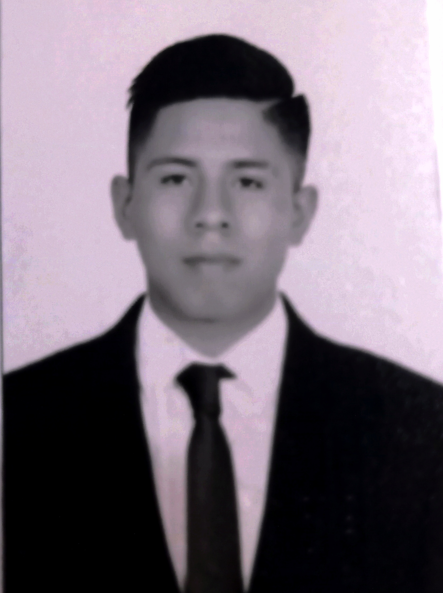

Aramis Alejandro Aguilar Huerta

Contact information.
-Telephone: 33-15189592
-Age: 22 Years.
-Social networks: aramis.aguilar0900@alumnos.udg.mx
-Nationality: Mexican.
Last two degrees of study and the degree you are studying right now.
-Secondary completed.
-Preparatory concluded with a recognition in Electrical Installations.
-Currently studying the fifth semester of the degree in computer engineering at the University of Guadalajara.
Skills.
-Social ability.
-Entrepreneurial profile.
-Analyst.
-Pragmatic.
-Initiative.
-Respect.
-Patience.
-Concentration.
Work experience.
I worked for five years in a shoe workshop and for 2 years 6 months I was in charge of the area in:
-Production.
-Accounting of -cost of materials.
-Purchase of materials.
-Sales online and in person.
-Customer Support.
-In charge of the workshop staff.
-Control and quality.
-Logistics and Transportation.
I work in other fields, but currently I am looking to work in something related to what
I am studying, so I am looking for a growth opportunity.
Project experience.
Currently I have little experience in software engineering projects, and software architecture.
Professional interests.
-Finish university studies.
-Study a master's degree.
-Exercise 100% of my studies.
-To get a good job.
-Teach programming classes.
Software que conoce y porcentaje de dominio.
-Microsoft 40%
-Linux (Debian) 30%
-Linux (Ubuntu) 20%
Languages you speak.
Currently I only know Spanish and I think I know 85% of it, but later I would like to learn English.
I understand English by 5% or 10% at most, but I don't know how to speak it.
personal references.